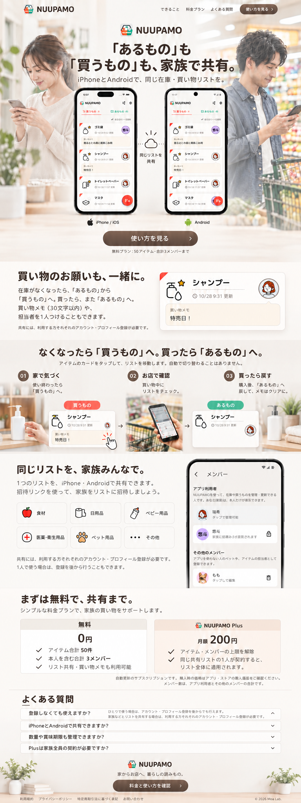

NUUPAMO LP 素材一覧
承認済みデザイン用の写真・実画面・端末モックです。画像を選ぶと配信用ファイルを開けます。人物写真の薄さ、見出し、ボタン、料金表はLP実装時に調整します。
写真

白いニットと濃いグレーのパンツで、自宅でやや左を向いてスマートフォンを確認する女性

整えた短髪としわの少ないブルーグレーのシャツで、買い物先でやや右を向いてスマートフォンを確認する男性

洗面台と蛇口のそばで、ハンドソープのボトルを手に取って確認する様子

ヒーローと同じ無地のブルーグレーのシャツで、日用品売場でスマートフォンを確認する手元

購入したハンドソープを洗面台の蛇口横へ戻す様子

植物と本、カップを両端に配置した明るい木のカウンター
実スクリーンショット

iOSの買うもの一覧。担当者と買い物メモを確認できる画面

Androidの買うもの一覧。iOSと同じリストを表示した画面

iOSのあるもの一覧。名前検索とカテゴリ絞り込みの画面

Androidのメンバー画面。瑞希、悠斗、その他のメンバーのももを表示
端末モック

iPhoneの端末枠に収めたNUUPAMOの買うもの一覧

Androidの端末枠に収めたNUUPAMOの買うもの一覧

Androidの端末枠に収めたNUUPAMOのメンバー画面
実画面の部分

ハンドソープの買い物カード。赤髪の担当者、買い物メモ「ミントがなかったらピーチ」を表示

あるものへ戻したハンドソープの実カード。緑のマーク、担当者を表示し、買い物メモは表示しない
アプリ既存素材

食材

日用品

ベビー用品

医薬・衛生用品

ペット用品

その他
ハンドソープを示す手洗いのアイコン
瑞希の赤髪のアバター
NUUPAMOアプリアイコン
標準SVGアイコン
iPhone・iOSを示すAppleマーク
Androidを示すロボット
同じリストの共有を示すクラウド
右向きの矢印
カードをタップする操作
お気に入り
料金プランの内容を示すチェックマーク
タップ位置を強調する赤い三角
承認済みの全体イメージ
